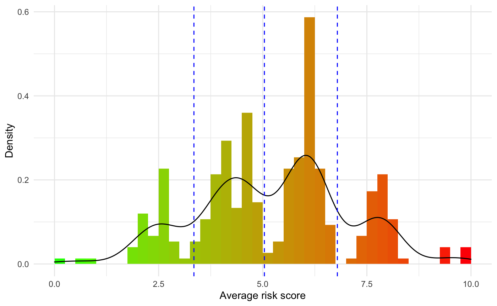
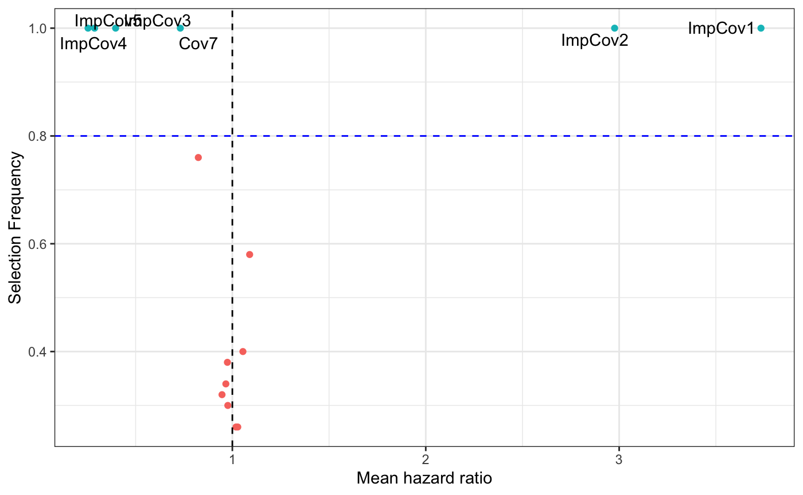
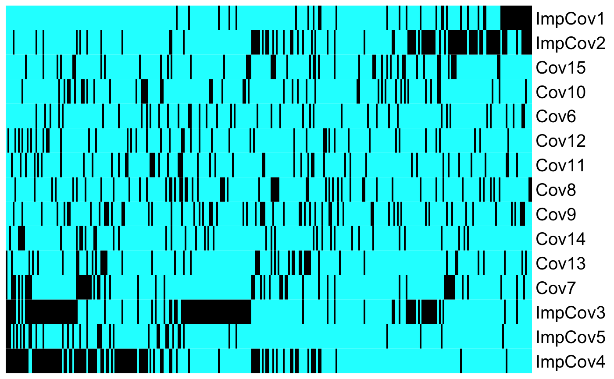
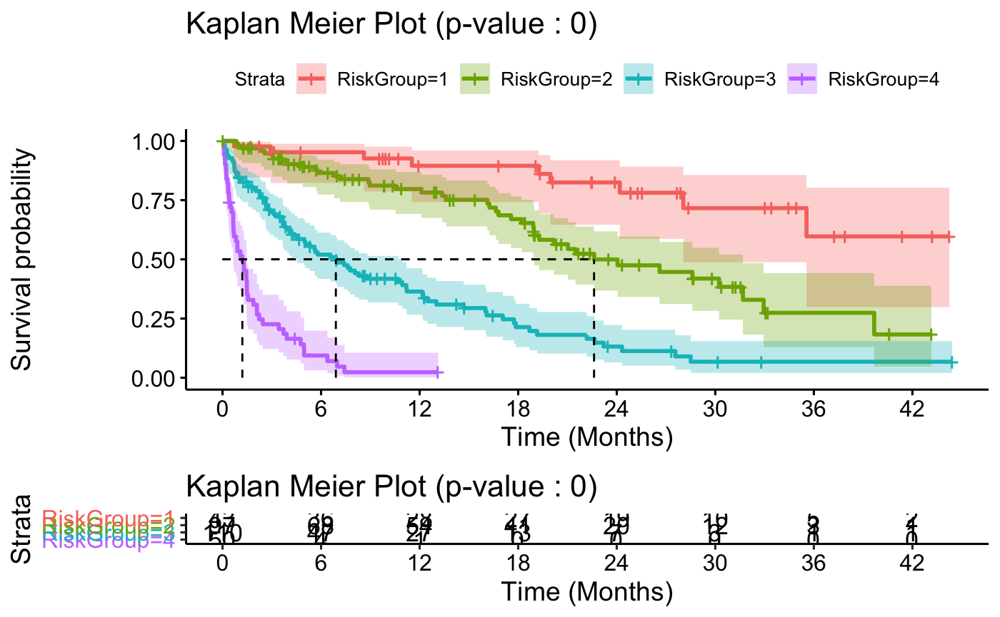
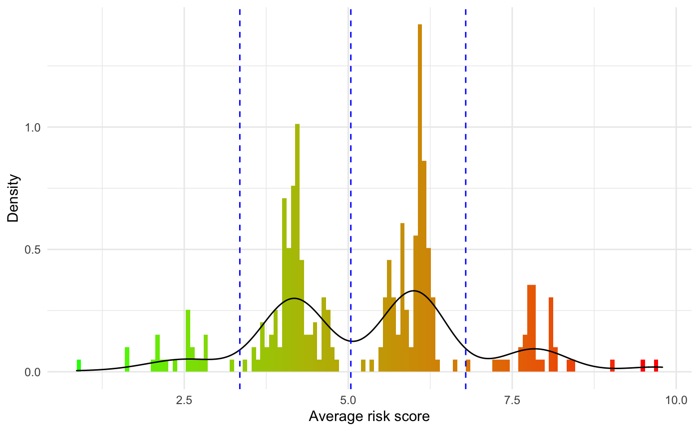
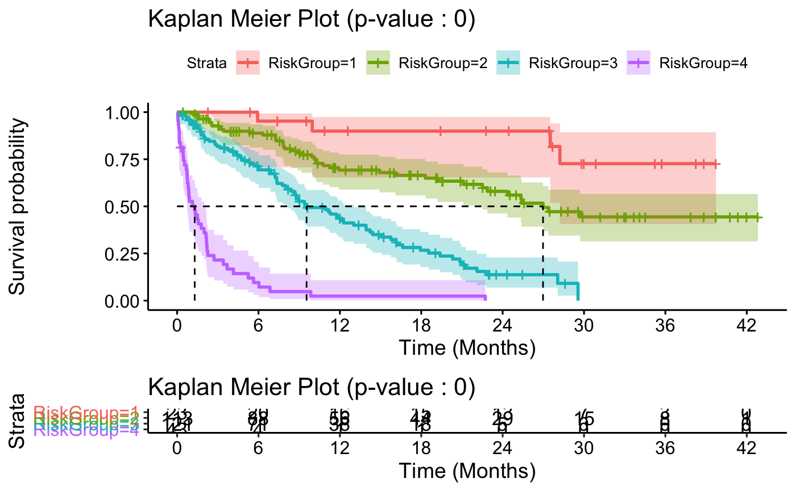

Risk-Prediction.RmdAs shown in the Performing an ensemble learning run article the output of the OncoCast() function is a list of complex features for each of the cross-validation performed. We include in the OncoCast package the getResults_OC() function to let users summarise and explore the results of the ensemble model of interest.
For any given method used this function will return a summary of the averaged predicted risk score of observations in the dataset, a summary prognostic power of the model generated, a summary of the variable importance and a comprehensible stratification of the data into risk groups.
In this article we will be considering the following model:
Note that regardless of the method selected in OncoCast() the results presented below will be constructed in a similar fashion.
onco_run <- OncoCast(data = survData, family = "cox", formula = Surv(time,status)~., method = c("LASSO"), runs = 50, cores = 1, save = FALSE ) #> [1] "Data check performed, ready for analysis." #> [1] "LASSO SELECTED"
In the rest of this article we will be studying the output of the getResults_OC() function which takes as input the output of OncoCast() (here onco_run$LASSO) and the data used to perform the ensemble learning model:
results <- getResults_OC(OC_object = onco_run$LASSO, data = survData)
After performing a given number of cross-validations OncoCast() returns a list of predicted risk values for all the observations that fell in the test set at each given iteration. For each observation we can average these predicted values in order to get a average predicted risk score. This score is the key component that will be used for stratification. Due to how the method is built this score is a surrogate predictor of the aggregated effect of all variables included as covariates in the model and we expect it to be a highly significant predictor of the outcome of interest.
getResults_OC() will return the raw averaged predicted risk of all samples:
summary(results$risk.raw) #> Min. 1st Qu. Median Mean 3rd Qu. Max. #> -3.42447 -0.78566 0.22363 0.01257 0.66052 3.11431
However in order to create a more comprehensible scoring system we rescale this vector to be between 0 and 10. Where 0 is the minimal risk found in the dataset and 10 is the maximum risk, leading to more intuitive interpretation of risk score comparison.
kable(results$RiskScoreSummary)
| Lower 10% | 1st Quarter | 1st Tertile | Median | 2nd Tertile | 3rd Quarter | Upper 10% | |
|---|---|---|---|---|---|---|---|
| Risk Score | 2.64 | 4.04 | 4.39 | 5.58 | 6.08 | 6.25 | 7.75 |
To get a better sense of the distribution of the predicted risk score, a histogram is returned along with the risk values:
results$RiskHistogram

The blue vertical segment represent the risk groups generated for risk stratification of the cohort of interest. We will cover this in the Resulting Stratification section below.
The primary goal of OncoCast being to optimize the prediction of the outcome of the dataset of interest it is of critical to importance to ensure that the average predicted risk score generated is a strong predictor of the outcome. To explore this we use the concordance probability estimate that is recorded at each iteration. This estimate between 0 and 1 shows how likely the predicted risk of an observation is to match the observed one in the test set. We return in getResults_OC() a summary of this estimate’s distribution across all iterations of the ensemble learner.
kable(results$CPE)
| Lower 10% | 1st Quarter | Median | 3rd Quarter | Upper 10% | |
|---|---|---|---|---|---|
| Concordance probability estimate | 0.73 | 0.74 | 0.75 | 0.77 | 0.78 |
Similarly we can use the average predicted risk score as a predictor of the survival outcome of observations in our dataset. We do this through a simple Cox’s proportional hazard model:
kable(results$RiskRefitTable)
| Coefficient | HazardRatio | SE | Z | Pvalue | |
|---|---|---|---|---|---|
| RiskScore | 0.6701482 | 1.954527 | 0.055481 | 12.07888 | 0 |
In this example we see that the risk score is a very significant predictor of survival. This is the expected result as it is built to be an aggregate measure of the effect of the combination of all covariates in the model.
In a clinical research setting there is a pronounced interest in understanding the underlying biology predicted by the ensemble model. In order to explore the effect of features when adjusted for all the other covariates included we include summary plots of the variable importance. This is particularly convenient in the penalized regression methods LASSO, RIDGE and ENET as we can use the averaged coefficient found and how often the coefficient was different than zero to create an interactive volcano plot summarizing these findings across all iterations. In the plot below the color of point corresponds to it’s mean coefficent value and the size of the point represents the event frequency of that feature in the data (in the case of binary predictors).
results$selectInflPlot
Note that the data used to create this plot is returned by the getResults_OC() function if the user wishes to modify this plot, as shown below:
mod_data <- results$resultsAll %>% mutate(Feature = rownames(results$resultsAll)) mod_data %>% ggplot(aes(x = exp(MeanCoefficient), y = SelectionFrequency, label = Feature)) + geom_point(aes(color = .data$SelectionFrequency > 0.8), show.legend = FALSE) + geom_text_repel(data = mod_data %>% filter(SelectionFrequency > 0.8) ) + geom_vline(xintercept = 1, linetype = "dashed") + geom_hline(yintercept = 0.8, linetype = "dashed", color = "blue") + theme(legend.position = "none") + xlab("Mean hazard ratio") + ylab("Selection Frequency") + theme_bw()

It is important to note that the RF and GBM methods to have variable importance plots but they are not as interpretable as these methods don’t return coefficients to explore the effect these variables have on the prediction. For methods SVM and NN the theoretical properties to assess variable importance haven’t been resolved yet and thus the are not estimated here. To get an idea of the ‘general direction’ of the effect of a feature in those methods we include heatmaps sorted by predicted risk score to explore possible patterns in the data. Note that these heatmaps are separated for binary and continous features:
results$heatmap.sorted.bin

As shown in the heatmap above we get a strong intuition that ImpCov1 drives the risk score upward (unfavorable prognostic), while ImpCov4 leads the risk score downward (favorable prognostic).
In a clinical research setting it is also going to be of interest to try distinguish risk groups in order to make clinical decision regarding the treatment path of a patient when their disease is diagnosed. Along with the previous results getResults_OC() will return a Kaplan-Meier plot stratifying the dataset into risk groups. The cuts argument controls how the stratification is performed. It expects the users to input quantiles at which the stratification should be performed (eg: median requires to cuts = 0.5, quartile requires cuts = c(0.25,0.5,0.75), etc). By default this value is set NULL, and getResults_OC() will generate risk groups automatically be performing a kmeans() clustering using 2 to 5 cluster. We use Akaike information criterion to select the optimal number of clusters to be selected. The function will then reverse engineer the corresponding quantile cuts and print them on the histogram of the distribution of the average predicted risk score shown in the Predicted risk score section above.
The specific quantile cuts found using the clustering or the ones inputted by the users are returned and can be used to find the corresponding predicted risk values associated to them:
results$cuts #> [1] 0.1433333 0.4666667 0.8333333
quantile(results$scaled.risk,results$cuts) #> 14.33333% 46.66667% 83.33333% #> 3.347475 5.039773 6.791276
These are then applied to the time to event data and returned with a Kaplan-Meier plot:
results$KM

To ease interpretation a summary table is also available in the output:
kable(results$survivalTable)
| MedianOS | 95%CI | 1Ysurvival | 3Ysurvival | HazardRatio | |
|---|---|---|---|---|---|
| riskGroup 1 | NA | (28.05,NA) | 0.9 (0.74,0.96) | 0.6 (0.3,0.8) | |
| riskGroup 2 | 22.62 | (18.95,31.68) | 0.78 (0.67,0.86) | 0.27 (0.13,0.44) | 2.875 |
| riskGroup 3 | 6.9 | (4.39,10.94) | 0.35 (0.25,0.45) | 0.07 (0.02,0.15) | 9.351 |
| riskGroup 4 | 1.21 | (0.65,1.49) | 0.02 (0,0.11) | 0.02 (0,0.11) | 41.316 |
In order for a model to be useful it is necessary for it to be able to be reproduceable in external datasets containing information for a similar problem. In many cases external validation is required to assess the validity of a method. We therefore included in OncoCast a tool to perform external validation in a efficient and simple way. This can be done using the validate() function that takes as input the oncocast ensemble model generated on the original dataset from the OncoCast() function, the object output of the getResults_OC() function, the new data to perform validation on and it’s corresponding formula to assess the outcome.
We show here an example simulating data in a similar fashion to the survData dataset as the external dataset.
set.seed(1) ImpCovMin <- 1 ImpCovMax <- 1.5 n <- 300 x.imp <- cbind(rbinom(n, 1, runif(1,0.1,0.5)),rbinom(n, 1, runif(1,0.1,0.5)), rbinom(n, 1, runif(1,0.1,0.5)),rbinom(n, 1, runif(1,0.1,0.5)), rbinom(n, 1, runif(1,0.1,0.5))) coefs <- c(runif(2,ImpCovMin,ImpCovMax),runif(3,-ImpCovMax,-ImpCovMin)) x <- x.imp mu <- as.vector(coefs %*% t(x)) time <- rexp(n,exp(mu))*12 c <- runif(n,0,as.numeric(quantile(time,0.8))) status <- ifelse(time < c , 1,0) time <-pmin(time,c) numDummy <- 10 DummyCov <- lapply(1:numDummy,function(x){ rbinom(n, 1, runif(1,0.1,0.2)) }) x.dumb <- do.call(cbind, DummyCov) x <- as.data.frame(cbind(x,x.dumb)) data <- as.data.frame(cbind(time,status,x)) colnames(data) <- c("time","status",paste0("ImpCov",1:ncol(x.imp)),paste0("Cov",(ncol(x.imp)+1):ncol(x))) rownames(data) <- paste0("Patient",1:n) in.data <- data
Note that the validate() function does not require all the predictors existing in the original data used in the OncoCast() ensemble model but we strongly recommend to have datasets with a large set of common predictors to avoid spurious results. Using the dataset generated above as input for validation:
validation <- validate(OC_object = onco_run$LASSO,Results = results, in.data = in.data, formula = Surv(time,status)~.)
Similarly to the getResults_OC() function, the validation object is a list containing summary results of the prediction accuracy of the validation and the resulting stratification generated using the same cuts as in the original ensemble model.
summary(validation$CPE) #> Min. 1st Qu. Median Mean 3rd Qu. Max. #> 0.7102 0.7279 0.7329 0.7322 0.7376 0.7437 validation$RiskHistogram.new

validation$KM

kable(validation$survTable,row.names = TRUE)
| MedianOS | 95%CI | 1Ysurvival | 3Ysurvival | HazardRatio | |
|---|---|---|---|---|---|
| riskGroup 1 | NA | (28.22,NA) | 0.9 (0.65,0.97) | 0.73 (0.41,0.89) | |
| riskGroup 2 | 26.98 | (22.51,NA) | 0.69 (0.59,0.77) | 0.44 (0.31,0.57) | 3.239 |
| riskGroup 3 | 9.54 | (8.15,13.02) | 0.44 (0.34,0.53) | 0 (NA,NA) | 9.83 |
| riskGroup 4 | 1.29 | (0.74,2.13) | 0.02 (0,0.11) | 0 (NA,NA) | 55.903 |
We see here that the stratification generated by the getResults_OC() applied to the new data in the validate() function leads to very similar stratification to the orginal one seen in the Results Stratification section above.
Note that for simplicity for futher potential analyses the resulting predicted risk score and the predicted risk group of the observations in the new data are returned as new variables in that dataset:
| time | status | OncoCastRiskScore | RiskGroup | |
|---|---|---|---|---|
| Patient1 | 3.058398 | 0 | 4.289694 | 2 |
| Patient2 | 27.697823 | 0 | 2.825361 | 1 |
| Patient3 | 10.222303 | 1 | 4.182133 | 2 |
| Patient4 | 1.780441 | 1 | 7.421118 | 4 |
| Patient5 | 3.488304 | 0 | 6.212887 | 3 |
| Patient6 | 8.146938 | 1 | 6.009718 | 3 |
It may also be of interest for clinicians estimate the survival time of individual patients, as this is an information that is both relevant for treatment assignment and is of critical interest to the patient themselves. Moreover it may be a research question for the users to study the patterns that lead to particularly favorable or unfavorable prognostics. We thus included in OncoCast the predIncomingSurv() function that allows for the individual survival prediction for a limited set of patients. Once again the ensemble learning model will be applied to generate a predicted survival curve for the patients in question. We below an example of an incoming cohort of 20 patients where we are studying the predicted survival of patients 5, 10, and 15.
new.data <- as.data.frame(matrix(rbinom(5*20,1,0.5),nrow=20,ncol = 5)) colnames(new.data) <- c("ImpCov1","ImpCov2","ImpCov3","ImpCov4","Cov7") rownames(new.data) <- paste0("Incoming",1:20) kable(new.data[c(5,10,15),], row.names = TRUE)
| ImpCov1 | ImpCov2 | ImpCov3 | ImpCov4 | Cov7 | |
|---|---|---|---|---|---|
| Incoming5 | 1 | 1 | 0 | 1 | 0 |
| Incoming10 | 0 | 1 | 1 | 0 | 1 |
| Incoming15 | 0 | 1 | 0 | 1 | 0 |
Incoming <- predIncomingSurv(OC_object = onco_run$LASSO,new.data=new.data, surv.print = c(5,10,15), riskRefit = results$RiskRefit)
Incoming is once again a list containing summary information for the predicted survival of those patients through an interactive survival curves plot:
Incoming$IncKM
We also include a table summarizing the estimated survival probability at different times points:
| Patient | Surv | Lower | Upper | Time | OncoRiskScore | |
|---|---|---|---|---|---|---|
| V1 | Incoming5 | 1.0000000 | 1.00 | 1.00 | 0 | 7.690603 |
| V2 | Incoming5 | 0.3348832 | 0.25 | 0.45 | 3 | 7.690603 |
| V3 | Incoming5 | 0.1465853 | 0.09 | 0.24 | 6 | 7.690603 |
| V4 | Incoming5 | 0.0704302 | 0.03 | 0.14 | 9 | 7.690603 |
| V5 | Incoming5 | 0.0500694 | 0.02 | 0.11 | 12 | 7.690603 |
| V6 | Incoming5 | 0.0294105 | 0.01 | 0.08 | 15 | 7.690603 |
As in the validate() function we also return here the data used in the prediction and we add the predicted risk score of all the patients in the inputted dataset:
| OncoCastRiskScore | |
|---|---|
| Incoming1 | 6.224435 |
| Incoming2 | 6.104330 |
| Incoming3 | 6.224435 |
| Incoming4 | 6.357385 |
| Incoming5 | 7.690603 |
| Incoming6 | 4.007893 |
| Incoming7 | 3.781600 |
| Incoming8 | 3.528544 |
| Incoming9 | 6.275503 |
| Incoming10 | 5.878036 |
| Incoming11 | 5.878036 |
| Incoming12 | 4.209880 |
| Incoming13 | 2.592794 |
| Incoming14 | 7.639534 |
| Incoming15 | 5.676049 |
| Incoming16 | 7.690603 |
| Incoming17 | 9.307690 |
| Incoming18 | 5.796154 |
| Incoming19 | 5.878036 |
| Incoming20 | 6.703784 |